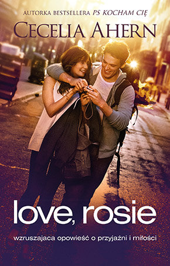
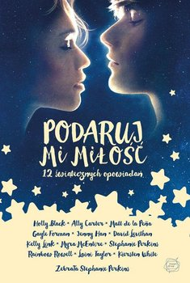
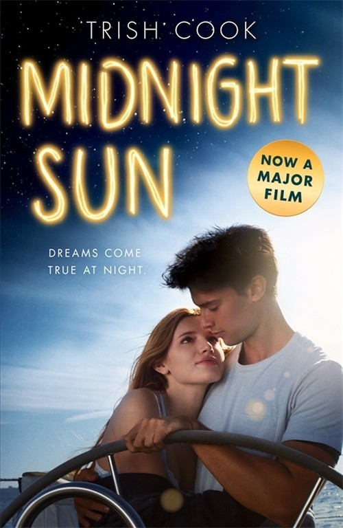

Lara Jean właśnie zaczyna naukę w klasie maturalnej. Jej starsza siostra wyjechała na studia do Szkocji, zrywając przy tym z chłopakiem, a młodsza robi wszystko, aby zaszczepić w ojcu chęć posiadania psa. Dziewczyny Song, jak same siebie nazywają, kilka lat wcześniej straciły matkę i dbają o to, aby nie zapomnieć o swoich koreańskich korzeniach i najbardziej ułatwić ojcu wychowanie trójki dorastających córek. Lara Jean w pudle na kapelusze, które dostała od matki, trzyma listy miłosne. I to nie byle jakie! Dziewczyna napisała je sama i skierowała słowa do swoich byłych obiektów westchnień, by ten sposób wyleczyć się z niechcianego uczucia. Łącznie powstało pięć listów, które nigdy nie miały trafić do adresatów. Jednak ktoś ukradł pudło i wysłał spisane na papierze słowa, które miały wyleczyć złamane serce dziewczyny. Wszyscy chłopcy, w których kiedyś kochała się Lara, otrzymują wiadomości. Całą sytuację można by obrócić w żart, gdyby nie to, że jednym z nich, jest były chłopak starszej z sióstr Song. Do wszystkich chłopcow, ktorych kochalam
|  | Rosie i Alex od dzieciństwa są nierozłączni. Życie zadaje im jednak okrutny cios: rodzice Alexa przenoszą się z Irlandii do Ameryki i chłopiec oczywiście jedzie tam razem z nimi. Czy magiczny związek dwojga młodych ludzi przetrwa lata i tysiące kilometrów rozłąki? Czy wielka przyjaźń przerodziłaby się w coś silniejszego, gdyby okoliczności ułożyły się inaczej? Jeżeli los da im jeszcze jedną szansę, czy Rosie i Alex znajdą w sobie dość odwagi, żeby spróbować się o tym przekonać? Czy warto czekać na prawdziwą miłość? Czy każdy z nas ma swoją „drugą połówkę”? Może dowiemy się tego po lekturze tej ciepłej i wzruszającej powieści. |
Książka 2-"Love Rosie"
|  | Znana piosenkarka udaje kogoś innego, by uciec przed sławą. Skazany na prace społeczne młodociany przestępca musi wziąć udział w przygotowaniach do jasełek i zakochuje się w najbardziej nieodpowiedniej dla niego osobie. Dziewczyna adoptowana przez Świętego Mikołaja zastanawia się, czy dla miłości jest gotowa opuścić krainę elfów… Nieważne, skąd pochodzisz, czy jesteś elfem czy zagubionym w świecie dorosłych nastolatkiem - uwierz w magię świąt! A jeśli nie uwierzysz - czy to oznacza, że ona nie istnieje? Przecież wszyscy pragniemy tego samego: by ktoś podarował nam miłość.
|
Książka 3-"Podaruj Mi Miłość"
|  | Siedemnastoletnia Katie, cierpi na groźną chorobę: nie może mieć kontaktu ze słońcem. Dlatego na dwór wychodzi wyłącznie po zmroku. Co noc gra na gitarze w podziemiach lokalnej stacji kolejowej. Pewnego razu spotyka Charliego, w którym kiedyś skrycie się podkochiwała. Rozpoczyna się romans, a dziewczyna za wszelką cenę usiłuje ukryć przed Charliem chorobę. |
Książka 4-"Midnight Sun"
| Hazel choruje na raka i mimo cudownej terapii dającej perspektywę kilku lat więcej, wydaje się, że ostatni rozdział jej życia został spisany już podczas stawiania diagnozy. Lecz gdy na spotkaniu grupy wsparcia bohaterka powieści poznaje niezwykłego młodzieńca Augustusa Watersa, następuje nagły zwrot akcji i okazuje się, że jej historia być może zostanie napisana całkowicie na nowo. |
Książka 5-"Gwiazd Naszych Wina"
 |
<----- Kliknij TU |
Odwiedź Także Mój Instagram : aphwj